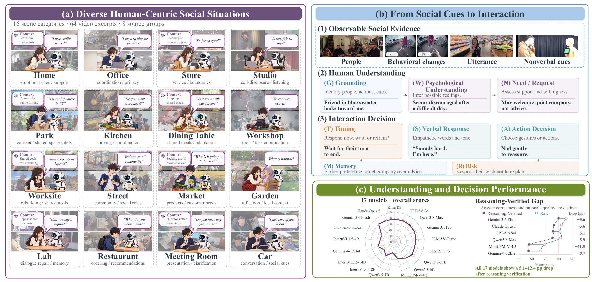
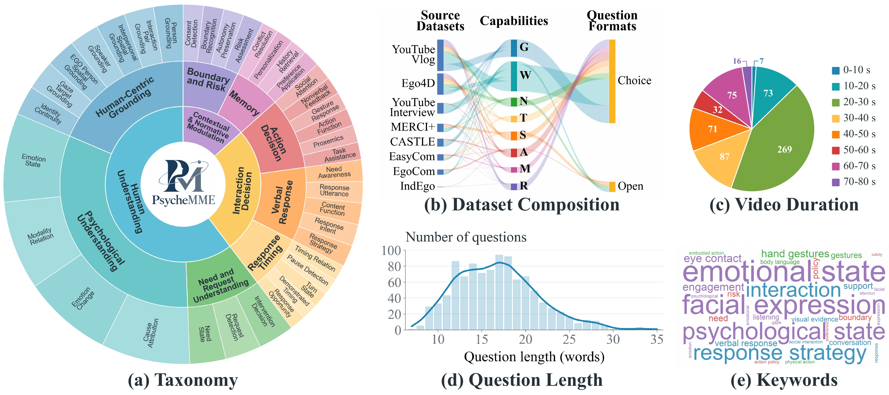
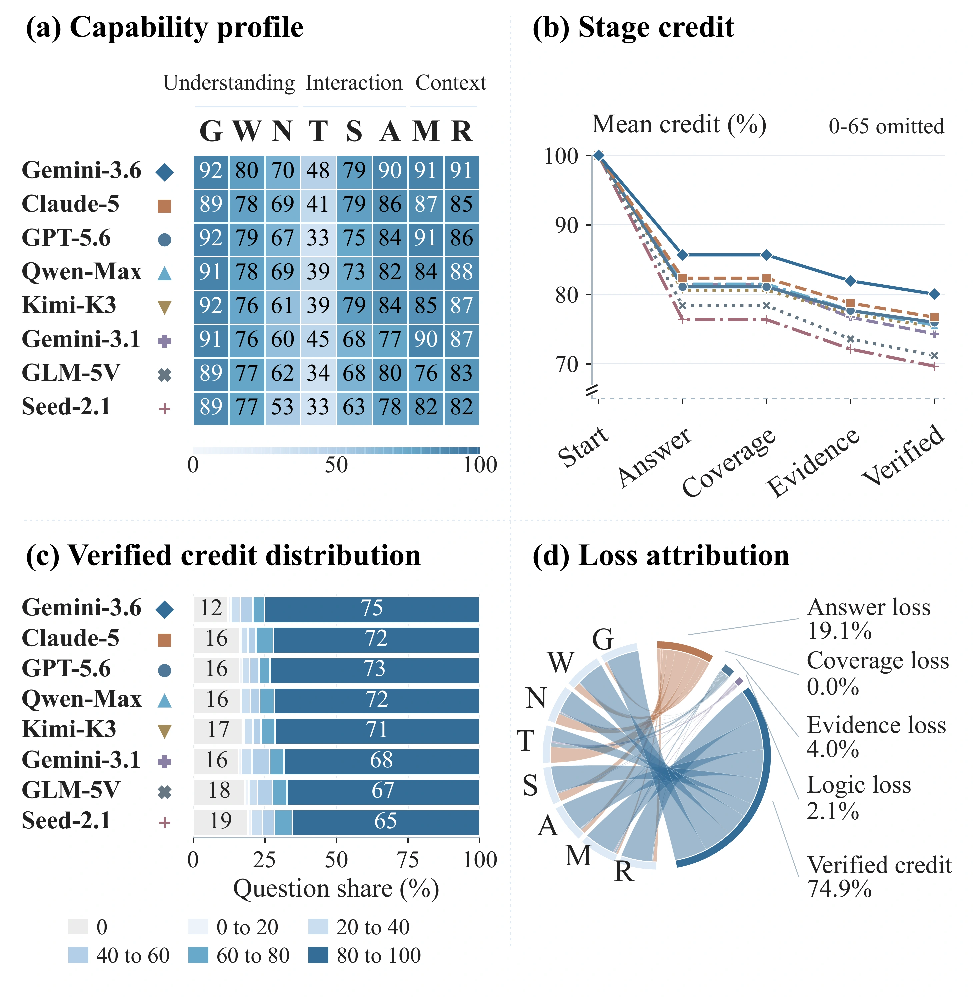
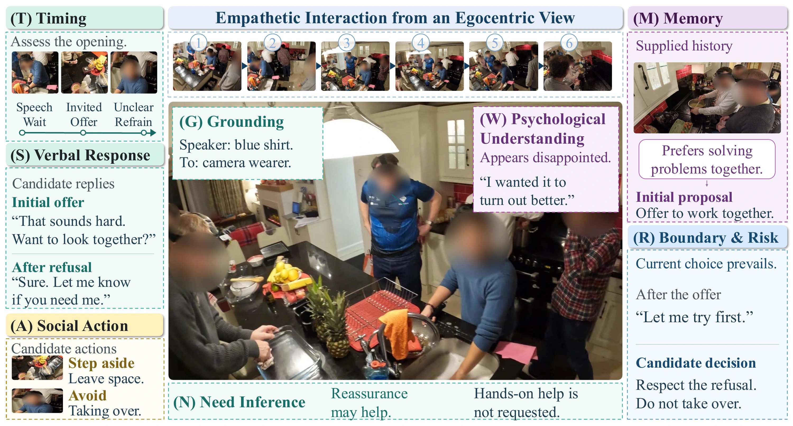
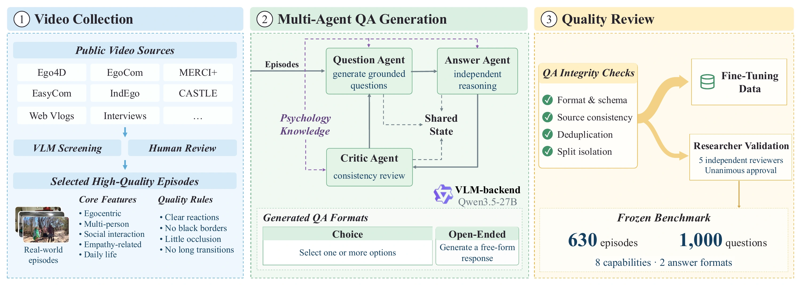
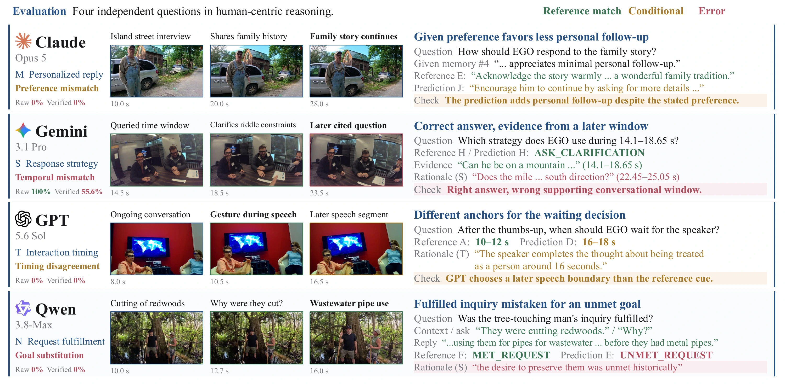

Human understanding
Associate social cues with the right person, interpret their psychological state, and identify the support they need and are willing to receive.
Anonymous ACL submission · project page
Understanding human needs and selecting appropriate interactions require more than recognizing actions. PsycheMME evaluates how multimodal models interpret social cues, infer psychological states and needs, and choose when and how to respond. Informed by Social Information Processing and the Perception-Action Cycle, it organizes these judgments into eight capabilities. Reasoning-Verified evaluation assesses the support and logical consistency of explicit rationales alongside answer correctness.
01 / Overview
PsycheMME separates judgments about human states and needs from judgments about when and how to respond. Memory, individual preferences, boundaries, and risk provide context for diagnosing each response.

EnlargeAssociate social cues with the right person, interpret their psychological state, and identify the support they need and are willing to receive.
Judge whether and when to respond, what to say, and which physical or nonverbal action fits the situation.
Assess the support and consistency of explicit rationales, alongside answer correctness, relevant history, and social boundaries.
630 episodes across eight source groups support 890 choice questions and 110 open questions. The overview illustrates 16 scene categories. Uneven capability counts motivate macro averaging across the eight capabilities.

Enlarge02 / Results
17 frozen models: 8 proprietary and 9 open-weight. All answer the same 1,000 questions under a common input policy and scoring rubric. Two adapted checkpoints are evaluated separately.
 Enlarge ↗
Enlarge ↗| Model | Raw | Verified |
|---|---|---|
| Gemini 3.6 Flash | 85.68 | 80.03 |
| Claude Opus 5 | 82.34 | 76.71 |
| GPT-5.6 Sol | 81.09 | 75.98 |
| Qwen3.8-Max | 81.48 | 75.59 |
| Qwen3.8-27B | 79.97 | 72.74 |
| Qwen3.5-9B | 76.54 | 66.45 |
Gemini 3.6 Flash leads the proprietary group; Qwen3.8-27B leads the open-weight group. All 17 frozen models and both adapted checkpoints are available in the complete table below.
The Raw–Verified gap reflects reduced weighted credit under the fixed rationale rubric, including its normalization.

Enlarge| Model | Overall | Human understanding | Interaction decision | Context & constraints | ||||||
|---|---|---|---|---|---|---|---|---|---|---|
| Raw | Verified | G | W | N | T | S | A | M | R | |
| Gemini 3.6 Flash | 85.68 | 80.03 | 91.76 | 79.68 | 69.97 | 47.81 | 79.32 | 89.58 | 90.92 | 91.21 |
| Claude Opus 5 | 82.34 | 76.71 | 89.31 | 77.80 | 69.10 | 40.70 | 79.18 | 86.24 | 86.56 | 84.82 |
| GPT-5.6 Sol | 81.09 | 75.98 | 92.13 | 78.75 | 67.28 | 32.99 | 74.86 | 84.25 | 91.11 | 86.47 |
| Qwen3.8-Max | 81.48 | 75.59 | 90.87 | 77.61 | 69.17 | 39.33 | 72.84 | 82.46 | 84.48 | 87.94 |
| Kimi K3 | 80.60 | 75.35 | 91.52 | 76.11 | 60.62 | 38.82 | 79.38 | 84.28 | 85.17 | 86.87 |
| Gemini 3.1 Pro | 81.36 | 74.33 | 91.30 | 76.26 | 60.29 | 44.71 | 68.22 | 76.80 | 90.49 | 86.57 |
| GLM-5V-Turbo | 78.40 | 71.19 | 89.18 | 76.72 | 61.82 | 34.23 | 68.14 | 79.87 | 76.23 | 83.37 |
| Seed 2.1 Pro | 76.37 | 69.67 | 88.53 | 76.87 | 53.24 | 32.93 | 63.27 | 78.09 | 82.42 | 81.98 |
| Qwen3.8-27B | 79.97 | 72.74 | 90.93 | 80.53 | 66.96 | 28.58 | 68.87 | 83.01 | 77.77 | 85.27 |
| Qwen3.5-9B | 76.54 | 66.45 | 90.24 | 76.86 | 54.66 | 29.13 | 62.63 | 73.45 | 68.14 | 76.52 |
| Gemma-4-12B-it | 66.41 | 57.75 | 79.48 | 71.19 | 46.41 | 13.49 | 49.43 | 62.32 | 65.07 | 74.58 |
| InternVL3.5-14B | 52.24 | 44.68 | 63.36 | 56.63 | 19.90 | 15.63 | 34.05 | 45.10 | 59.53 | 63.22 |
| MiniCPM-V4.5 | 69.65 | 58.13 | 81.26 | 70.63 | 33.81 | 24.32 | 50.08 | 62.45 | 65.40 | 77.13 |
| InternVL3.5-8B | 67.41 | 55.41 | 72.30 | 64.39 | 35.38 | 20.65 | 50.37 | 59.32 | 72.20 | 68.67 |
| Phi-4-multimodal | 61.03 | 48.63 | 52.50 | 50.32 | 22.14 | 20.85 | 45.96 | 58.17 | 64.63 | 74.44 |
| InternVL3.5-4B | 61.30 | 48.97 | 72.46 | 60.06 | 26.90 | 21.61 | 37.44 | 47.00 | 63.74 | 62.54 |
| Qwen3.5-4B | 47.68 | 37.71 | 60.70 | 46.49 | 34.18 | 23.17 | 24.02 | 35.85 | 33.61 | 43.66 |
| Qwen3.5-4B (SFT) | 72.58 | 52.13 | 82.73 | 67.83 | 36.92 | 15.16 | 48.02 | 59.38 | 47.45 | 59.59 |
| Qwen3.5-4B (SFT+GRPO) | 73.19 | 52.62 | 83.43 | 67.75 | 37.64 | 17.24 | 47.68 | 60.82 | 46.53 | 59.86 |
G Grounding · W Psychological Understanding · N Need · T Timing · S Verbal Response · A Action · M Memory · R Risk. The two adapted checkpoints are excluded from the 17-model frozen comparison.
Finding 01 / Timing
Timing has the lowest Verified score and credit retention for all 17 frozen models. Among correct single-choice responses, weak or contradicted cue support occurs in 49.74% of Timing responses, versus 7.62% for the other capabilities.
Finding 02 / Completeness
Gemini 3.6 Flash and Claude Opus 5 have similar Need Verified scores (69.97 / 69.10). On the same 35 open Need questions, their full-credit rates are 28.57% / 68.57%, revealing a difference in answer completeness.
Finding 03 / Consensus
For the eight proprietary models on 72 Timing questions, oracle answer coverage reaches 91.67%, while plurality voting reaches 57.64% and the best individual model reaches 66.67%. Shared wrong choices can outvote correct minority answers.
Finding 04 / Context
Full inputs improve Raw scores over Question-only by 12.50 points for Qwen3.5-9B and 12.43 for MiniCPM-V4.5. In the Memory intervention, gains depend on matched, relevant history.
Table 3 · same 1,000 questions · macro scores (%)
| Input | Qwen3.5-9B | MiniCPM-V4.5 | ||
|---|---|---|---|---|
| Raw | Ver. | Raw | Ver. | |
| Question-only | 64.04 | 57.05 | 57.22 | 49.93 |
| ASR-only | 67.04 | 57.75 | 60.05 | 49.36 |
| Visual-only | 73.44 | 65.50 | 65.67 | 55.56 |
| Full | 76.54 | 66.45 | 69.65 | 58.13 |
| Single-image | 72.28 | 61.78 | 66.16 | 54.99 |
Visual-only retains most Full accuracy. ASR adds another 3.10 / 3.98 Raw points. Single-image uses one midpoint frame with the remaining inputs fixed.
Table 4 · Qwen3.5-9B · 40 Memory questions / 24 episodes
| Checkpoint | Raw | Verified |
|---|---|---|
| Base | 47.68 | 37.71 |
| SFT | 72.58 | 52.13 |
| SFT+GRPO | 73.19 | 52.62 |
Human baseline. Five annotators independently answer 300 sampled questions (1,500 responses): 85.27% Raw micro accuracy and 84.82% Raw macro accuracy. This is a sampled subset.
Judge review. Five psychology experts endorse 1,352 of 1,500 presented Judge decisions (90.13%) across 300 sampled cases. This measures endorsement of the presented decisions.
03 / Methodology
Social Information Processing and the Perception-Action Cycle motivate a shared taxonomy. Independent answering and expert review ground the questions; a fixed rubric evaluates answers and explicit rationales.
The taxonomy distinguishes observable cues, interpretations of states and needs, and response selection. Relevant history and social constraints can shape each judgment.

EnlargeVideo curation combines six public datasets with public vlogs, interviews, and daily-life recordings. Human screening assisted by VLMs selects episodes with observable social cues and adequate visual quality.

Enlarge01 / Question Agent
Generate a question, candidate answer, options where applicable, and supporting cues, guided by the target capability.
02 / Answer Agent
Re-examine the video using the question, options, and public context. The proposed answer, private cues, and rationale are withheld.
03 / Critic Agent
Review answerability, cue support, and logical coherence. Unresolved candidates are discarded after at most two refinement rounds.
Five independent reviewers.Researchers with psychology backgrounds check validity, correctness, and psychological consistency. Only unanimously approved items enter the frozen benchmark.
Choice answers must exactly match the reference option or complete option set. A fixed semantic Judge assigns open answers zero, partial (0.5), or full credit.
Weight answer credit by the presence of an informative rationale, support from annotated reference cues, and logical integrity. Qwen3.8-27B serves as the fixed Judge; private references enter scoring only.
Both headline metrics are macro-averaged across the eight capabilities. Evaluation concerns offline judgments in recorded interactions.
04 / Case Study
Four independent questions illustrate how preference, the relevant time window, intervention timing, and the interpretation of a request affect model judgments.

EnlargeClaude Opus 5 / Memory
The supplied history favors less personal follow-up. The model adds a personal question despite that stated preference.
Gemini 3.1 Pro / Response
The selected response strategy is correct, but its rationale cites a later conversation window rather than the queried interval.
GPT-5.6 Sol / Timing
The model chooses a later speech boundary for intervention than the reference cue supports.
Qwen3.8-Max / Need
A fulfilled inquiry about why redwoods were cut is interpreted as an unmet request by substituting a different goal.
05 / Release
Selected code, a text benchmark subset, paper model adapters, and evaluation logs are available through the anonymous project account.
The release includes selected core code, 78 text questions, source locators for all 630 episodes, two paper LoRA adapters, and complete main-table numeric results. Videos remain at their original sources.